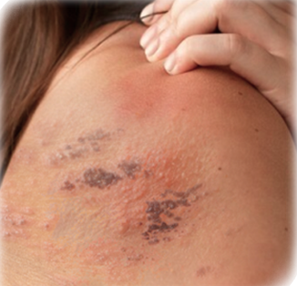

ใครบ้างที่มีความเสี่ยงต่อโรคงูสวัด
คุณอาจมีความเสี่ยงหาก:
50+
โรคงูสวัดพบได้บ่อยที่สุดในผู้ที่มีอายุ 50 ปีขึ้นไป
90%
มากกว่า 90% ของผู้ที่มี อายุมากกว่า 50 ปีขึ้นไป
มีเชื้อไวรัสที่ก่อให้เกิด โรคงูสวัดอยู่แล้ว

1/3
1 ใน 3 ของประชากรมีโอกาสเกิดโรคงูสวัดตลอดช่วงชีวิต
50+
โรคงูสวัดพบได้บ่อยที่สุดในผู้ที่มีอายุ 50 ปีขึ้นไป
90%
90% ของผู้ป่วยมีอาการปวดตามแนวเส้นประสาท
1/3
1 ใน 3 ของประชากรมีโอกาสเกิดโรคงูสวัดตลอดช่วงชีวิต
*อาการของโรคงูสวัดในผู้ป่วยแต่ละรายอาจแตกต่างกันไป ข้อความเหล่านี้
อิงตามคำอธิบายของผู้ป่วยบางรายเกี่ยวกับอาการเจ็บปวดจากโรคงูสวัด
และไม่ได้แสดงถึงประสบการณ์ของผู้ป่วยทุกคน*